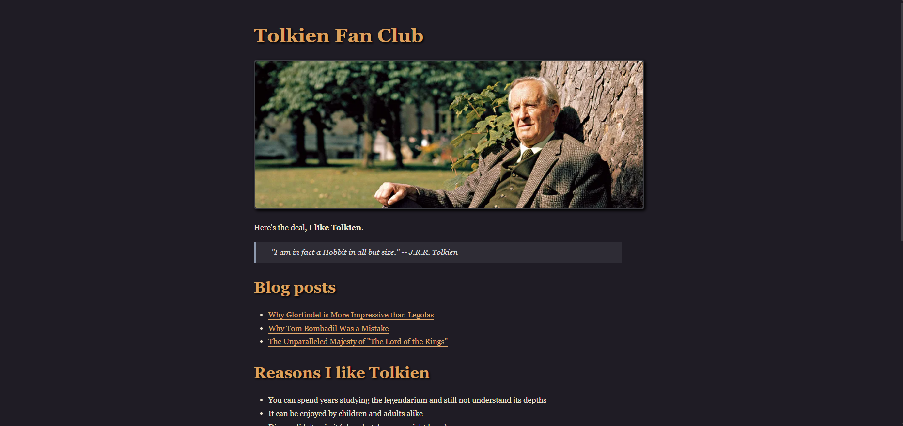

Hey! Nice to meet you.
I'm Tre'von, a Software and Web Developer
I am currently looking for my next opportunity. I love all things tech and always try to be in the know about the next big thing. I am constanlty upscaling myself through any ways I can. When I am not working I enjoy gaming, watching anime and hanging out with friends. I am also I hobbyist 3D printer and learning CAD.
Ever since I was young I've enjoyed solving problems. As a software engineer I get to do that everyday. I look forward to working with you to solve some of your problems together.
Education
Western Michigan University
Bachelor's of Business Administration
Major: Computer Information Systems
Graduation Date: 2017
Work Experience
Software Engineer
SalesPage Technologies | May 2022 - April 2025
- Spearheaded development of robust Java-based ETL systems across 10+ client implementations, improving data throughput, accuracy, and processing speed.
- Designed and implemented a Dockerized internal operations dashboard using Vue.js and Python, saving IT teams over 25 hours weekly in manual reporting and troubleshooting.
- Streamlined CI/CD pipelines using Jenkins, reducing deployment cycles by 60% and halving unplanned system downtime.
Integration Developer
Level Data, Inc | Jan 2019 - May 2022
- Engineered Groovy and YAML-based ETL solutions that automated key data flows, reducing manual workload by over 75%.
- Created scalable and secure API connectors (e.g., PowerSchool integrations) to synchronize data between diverse education systems.
- Conducted in-depth tuning of SQL Server databases, ensuring responsive query performance and system resilience at scale.
Validation Rule Developer
Level Data, Inc | Sep 2017 - Dec 2018
- Authored and implemented over 1,000 dynamic JavaScript-based validation rules to detect and resolve critical data issues, directly impacting thousands of dollars of district funding and compliance accuracy.
- Developed standardized validation rule libraries, improving rule deployment times by 40% and simplifying version control.
- Partnered with business analysts to interpret state and federal education policy into functional validation logic.
Student Sync Developer
Level Data, Inc | Jul 2017 - Aug 2017
- Led upkeep of legacy C# based sync tools, ensuring uninterrupted service and client satisfaction across diverse educational environments.
- Performed scheduled, off-peak system upgrades to reduce downtime risks by 15% and maintain service continuity.
- Delivered timely resolutions to synchronization issues, sustaining system uptime above 99.9%.
Skills


Projects
Book Bot
This project was created as part of the boot.dev curriculum. This served as a capstone to the python course. This simple project serves as a great introduction to working with Python. It processes book text files and outputs the frequency of each letter.
Static Site Generator
This project was created as part of the boot.dev curriculum. This project takes in a user defined markdown file and creates a web site from it. No messing with HTML or CSS needed. The Static Site Generator uses many facets of Python programming including functional programming and recursion. This project is also hosted in Github and allowed me to working with creating custom routes and hosting in Github
Workopia
This was a self guided CRUD project that I worked on to learn PHP. This is made in vanilla PHP with no framework. Features include, server side authentication, ability to create account and login, field validation and much more.
Asteroids
It's a classic but in the modern era! This project was created as part of the boot.dev curriculum. This project functions as a practicle exercise in working with OOP in Python. This is the asteroids game fully playable from the confort of your computer.